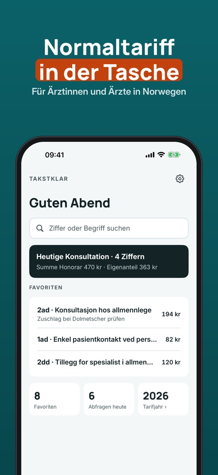
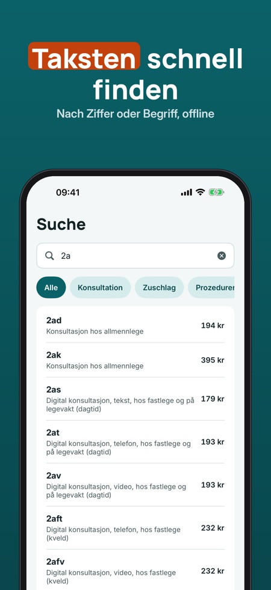
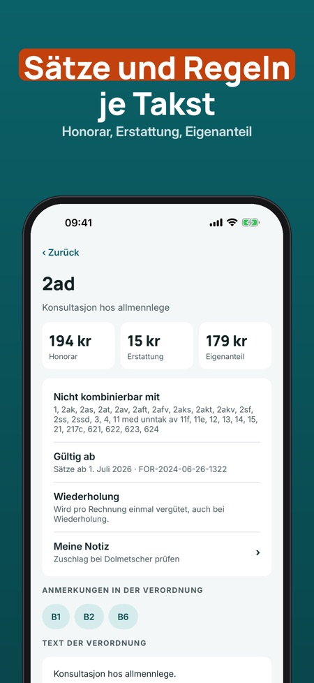

Normaltariff offline suchen. Für Ärztinnen und Ärzte in Norwegen: Taksten der Normaltariff schnell finden – auch ohne Internet. Sätze, ungültige Kombinationen und Konsultationen mit Summe.



Takstklar ist ein Nachschlagewerk für Ärztinnen und Ärzte, die in Norwegen arbeiten: die norwegische Normaltariff durchsuchen, Sätze und Regeln je Takst sehen und die Taksten für einen Besuch zusammenstellen – gespeichert auf dem Telefon. Die Oberfläche gibt es auf Deutsch, die Tariftexte sind norwegisch wie in der Verordnung.
Die Tabelle sind die Taksten in Kapitel II der norwegischen Verordnung FOR-2024-06-26-1322, mit Sätzen ab 1. Juli 2026 (Daten von Lovdata unter NLOD 2.0). Schweizer TARDOC und deutsche GOÄ sind nicht enthalten.
Suche, Takst-Details, 5 Favoriten und die letzten 10 Abfragen sind ohne Kauf nutzbar. Die Vollversion ist ein Einmalkauf und schaltet Konsultationen mit Summe, Vorlagen, Notizen, unbegrenzte Favoriten und den ganzen Verlauf frei. Kein Abo.
Takstklar ist ein Nachschlagewerk und nicht mit Legeforeningen, Helfo oder dem norwegischen Gesundheitsministerium verbunden. Prüfe Sätze und Regeln immer am geltenden Tarif.